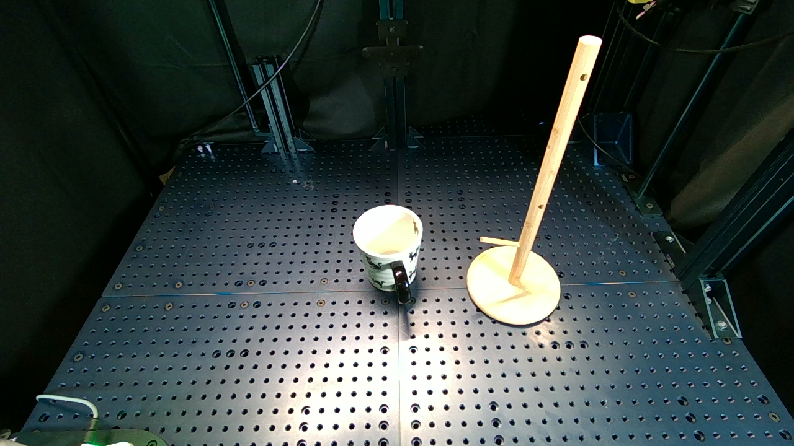

Enabling robots to execute novel manipulation tasks zero-shot is a central goal in robotics. Most existing methods assume in-distribution tasks or rely on fine-tuning with embodiment-matched data, limiting transfer across platforms. We present NovaFlow, an autonomous manipulation framework that converts a task description into an actionable plan for a target robot without any demonstrations. Given a task description, NovaFlow synthesizes a video using a video generation model and distills it into 3D actionable object flow using off-the-shelf perception modules. From the object flow, it computes relative poses for rigid objects and realizes them as robot actions via grasp proposals and trajectory optimization. For deformable objects, this flow serves as a tracking objective for model-based planning with a particle-based dynamics model. By decoupling task understanding from low-level control, NovaFlow naturally transfers across embodiments. We validate on rigid, articulated, and deformable object manipulation tasks using a table-top Franka arm and a Spot quadrupedal mobile robot, and achieve effective zero-shot execution without demonstrations or embodiment-specific training.
Initial Observation
Generated Video
Execution Video
Result 1: [Replace with description of your first key result or demonstration]
Result 2: [Replace with description of your second key result or demonstration]
Result 3: [Replace with description of your third key result or demonstration]
Your Method Name: [Replace this with a description of your methodology/approach] Describe your technical approach, key innovations, and how your method solves the problem. Include information about your algorithm, model architecture, training procedure, or experimental setup.
Experiment 1: [Replace with description of your first experimental result or ablation study]
Experiment 2: [Replace with description of your second experimental result or ablation study]
Experiment 3: [Replace with description of your third experimental result or ablation study]
Limitations: [Replace with discussion of your method's limitations, failure cases, or areas for future work]
Additional Result 1: [Replace with description of additional experimental results or demonstrations]
Additional Result 2: [Replace with description of further demonstrations or results]